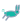
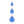
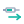

Hvert sæt har et basal-ikon (langtidsvirkende, blå) og et rapid-ikon (hurtigvirkende, teal). Forskellen er nu både i farve OG i form, så de kan adskilles på et splitsekund. Ikonerne er vist på både mørk og lys baggrund i tre størrelser: 16px (canvas-marker på grafen), 24px (settings-dropdown og kampagne-beskrivelser) og 48px (til inspektion af detaljer).
Tæt på din oprindelige idé. Begge er dråbe-formede så insulin-betydningen er klar; basal har et lille ur indlagt (24h-virkning), rapid har et lyn (instant). Højest insulin-genkendelse.
Sand der løber langsomt vs flamme der brænder hurtigt. Stærkest temporal kontrast — to vidt forskellige silhuetter der ikke kan forveksles. Kræver lidt mere kontekst for insulin-betydningen.
Den faktiske farmakokinetik tegnet i ikonet. Basal har en flad plateau-kurve over tid, rapid har en skarp peak. Mest "lærerigt" — viser hvad insulinet rent faktisk gør i kroppen.
Måne = nat-dækning og lang virkning. Sol med stråler = øjeblikkelig effekt. Stærke kulturelle symboler men mister insulin-tilhørighed uden kontekst.
Aesops fabel — universal symbol for langsom vs hurtig. Mest charmerende og børnevenlig, men kompleks geometri kan blive sløret ved 16px. Bedst ved 24px+.

Energi-metafor: fuldt batteri = vedvarende reserve, lyn = øjeblikkelig udladning. Modernt og rent. Batteri-formen er bredere end kvadratisk og kan virke "ikke-medicinsk".
Visualiserer release-mønstret: tre drops der falder langsomt vs ét stort drop med stænk i alle retninger. Begge er klart "væske" så insulin-tilhørighed bevares.

Forskellige injektions-former: en lang horisontal pen (langtidsvirkende dosering) vs en kort sprøjte med en bevægelses-pil under (hurtig injektion). Mest "klinisk" og virkelighedsnær.
